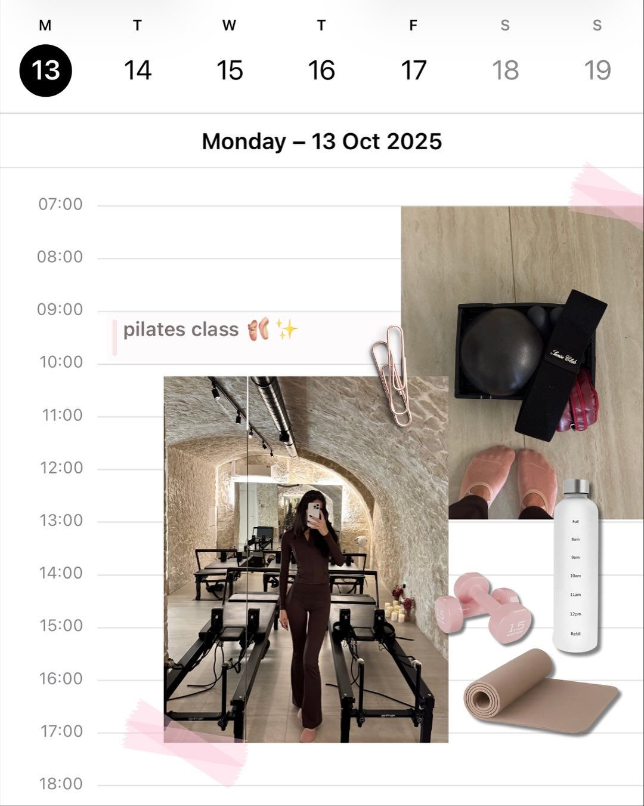

Desperte com intenção
Antes de olhar o celular, respire fundo. Beba água e escolha como quer se sentir hoje.
MANHÃ · 5 MINUTOSAUTOCUIDADO • MOVIMENTO • EQUILÍBRIO
Um sistema que guia a sua vida a partir de quem você quer ser, com a sua rotina, as suas metas e a sua identidade em um só lugar.

Não culpe a disciplina quando o problema é que você ainda não decidiu quem quer ser. A forma como você se vê define como você age.
UM NOVO OLHAR PARA VOCÊ
Mais presença. Mais cuidado. Mais você.
O SEU MELHOR ENCONTRO É COM VOCÊ
Você não precisa mudar tudo de uma vez. Só abrir um espacinho no dia para o que faz bem.
Corpo e mente juntos em uma rotina com mais significado.
Práticas simples que cabem na sua vida, no seu ritmo.
Menos cobrança, mais acolhimento em cada etapa.

Respire. Você está
exatamente aqui.
FAÇA DO CUIDADO UM HÁBITO
Não precisa ser perfeito.
Só precisa fazer sentido para você.
Antes de olhar o celular, respire fundo. Beba água e escolha como quer se sentir hoje.
MANHÃ · 5 MINUTOSAlongue, caminhe ou dance sua música favorita. Encontre prazer em se movimentar.
DURANTE O DIA · 10 MINUTOSDesligue um pouco do mundo. Cuide da pele, solte os ombros e reconheça algo bom do seu dia.
NOITE · 10 MINUTOS
Um passo de cada vez.
Todos os dias, por você.
VAMOS CONVERSAR?
Um espaço de inspiração para criar hábitos de autocuidado, movimento e equilíbrio. A ideia é cuidar de você de um jeito leve e possível.
Não. Comece com práticas simples, respeitando seus limites. Para exercícios específicos, busque orientação profissional.
Escolha um pequeno ritual e reserve de 5 a 10 minutos. Adapte os horários à sua realidade e aumente aos poucos, se desejar.
Para nós, é também sobre como você se sente: descanso, autoestima, presença e uma relação mais gentil consigo mesma.
Um lembrete para levar com você